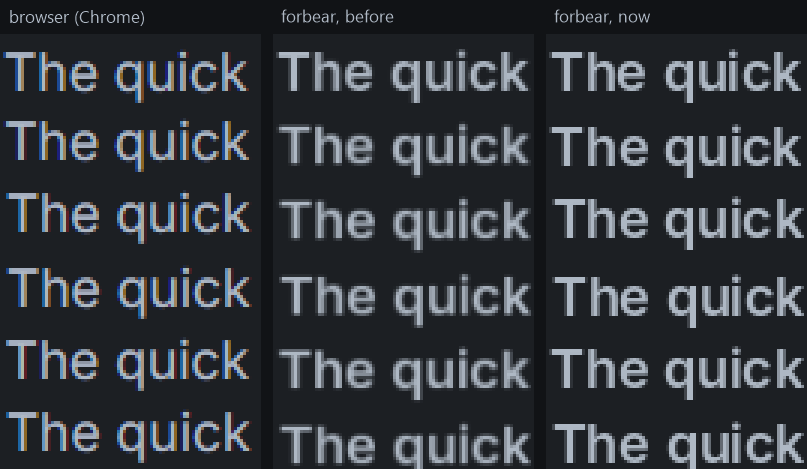

forbear log, entry 004: React-like state (mostly) without the heap, events without callbacks
TL;DR:
- React-like state and components
- Keyboard and mouse events
- Windows support
- Other things: quick start script, borders, clipboard and sharpter text
Download the demo from above to try it yourself.
Components and hooks
Here's a Counter component with forbear:
Counter :: () {
count := state(s64);
element(#code {
text(sprint("Count: %", count.*));
if on_click() {
count.* += 1;
}
});
} @componentComponents are now defined through functions. The challenge with components as functions for a UI library such as forbear is keying. Keying here is the fact that we stamp each element with what's supposed to be a unique key so that we can safely keep state for them in between frames.
Say you render two counters side by side:
Counter();
Counter();The keys of the elements in both instances are going to collide. The reason for this is that the key for each element is mainly defined by its source location, and between the instances, that's going to be the same: some line inside of the component function.
To sidestep this problem, we have @component. The basic way it works is that we now have a compiler plugin that finds all of the calls to a function with this annotation, and then wraps them with a new function we're introducing called scope. In practice, what it does is:
Counter();
// becomes
scope(#code Counter());Then, scope can capture its caller location to define a new key that's unique across component instances.
Another basic use of components is having children. This was a particularly hard problem in Zig because Zig doesn't have macros, and I had to resort to lots of weird complex stacks of nodes back and forth, but Jai does. So, in Jai, all a user has to do to support children for a component is:
Button :: ($body: Code) -> bool #expand {
clicked := false;
element(#code {
#insert body;
if on_click() {
clicked = true;
}
});
return clicked;
} @component
if Button(#code {
text("click me, dude!");
}) {
print("hey, you clicked the button!");
}There is still one very downside to this, though, which is that component instances in a loop are now quite annoying to handle. Loops with elements will require you to define a manual key, so that there are no collisions. For components though, the manual key would need to go in the scope function call, which only shows up after the compiler plugin actually runs. A workaround that I have been using is simply to define the scope manually:
for ... {
scope(sprint("%", it_index), #code MyComponent(...));
}This is definitely something I want to improve, so open to any ideas!
State (mostly) without the heap
I firmly believe that the best developer experience for building a UI is achieved only when you can define its state right beside the UI itself. This is exactly what React got right with its useState in my view. But, one of the biggest problems with this idea is that it requires the heap for simple data, while doing the more obvious thing, which is defining a global state struct and drilling it down through parameters, doesn't.
This was a problem that I painstakingly thought through during the Zig to Jai rewrite, and I think I found a good solution.
The way I made it work was through a pair of static 16MB buffers. One buffer for the previous frame, and another for the current frame. During the frame, we basically keep track of the amount of state used so far, which is just an offset into the current buffer.
toggled := state(bool, false);Once the user calls the state function, we basically reserve the next few bytes of the current buffer, rounded up to 8 bytes, and move the offset forward. The element that called it remembers where its state starts and how many bytes it used. Then, we look up the same element in the previous frame's tree, through its key, and copy its value from the previous buffer into the new slot. If there's no previous value, because the element just appeared, the slot gets the initial value instead.
At the end of the frame, the two buffers swap: the current one becomes the previous one, and the offset goes back to zero. The buffer from two frames ago is simply written over by the next frame. This means that there's nothing to free. If an element stops being rendered, nobody copies its state forward, so it's gone after one frame, without a single call to free.
frame N frame N + 1
┌───────────────────────┐ ┌───────────────────────┐
│ A: previous (N - 1) │ │ A: current │
└───────────┬───────────┘ └───────────▲───────────┘
│ state() copies │ state() copies
┌───────────▼───────────┐ ┌───────────┴───────────┐
│ B: current │ │ B: previous (N) │
└───────────────────────┘ └───────────────────────┘The caveat to this approach I've picked for state is that the rules of hooks for React also apply here. We can't define state after children that also use state, and we can't define state inside if-statements. forbear asserts on both: when an element calls state after a child used it, and when it calls state a different number of times than in the last frame. So, you find out right away instead of getting someone else's state. I think it's a worth it trade-off.
There is one case that this idea doesn't solve, though, and that I also couldn't figure out in the Zig version, but now I've found a way. The case is resizable arrays. Say you have a TO-DO list and you want to append a new item, or you want to keep the contents of an input field. Their size has no upper bound, so they're states of varying size, which require the heap.
tasks := state([..]string);To support this, we define a fixed list of 256 Flat_Pools that each element can claim for itself when it defines a state of varying size. Then, since a resizable array carries its own allocator, we just set it to the Flat_Pool's allocator.
Each pool slot also keeps track of the last frame in which it was used. At the end of each frame, any pool whose element didn't render gives its pages back to the operating system, and becomes free for another element to claim.
Both the static buffers and the pools reserve a lot of virtual memory, which sounds bad at first, but most of it never turns into actual memory usage. There are three levels to how the operating system deals with memory:
- Reserved: a range of addresses is set aside for you. It doesn't use any RAM.
- Committed: the operating system promises it can back those pages if you write to them. It counts against a system-wide limit (RAM plus the page file), but still doesn't use any RAM.
- Resident: the pages you actually wrote to. This is the RAM your program uses.
Each pool reserves 64MB the first time an element claims it, and only commits pages as the array actually grows. So, even if all 256 pools were claimed, that's 16GB of addresses out of the roughly 128TB a 64-bit process has, and the RAM used is only what your arrays hold. When a pool is released, its pages stop using RAM.
The 64MB is also the real limit of this design: a single resizable array in state can't grow past it. When it tries to, the pool runs out of reserved addresses and hits an assert. For a list of tasks or the text in an input, that's plenty, but don't keep a huge dataset in state.
The static buffers work the same way, even though no allocation is involved. They're zero-initialized, so they don't take any space in the executable, and when the program loads, the operating system maps the 32MB without loading any of it into RAM. A page only becomes resident once state first writes to it. So, if your program only ever uses 2KB of state, that's about one page of RAM per buffer, not 32MB.
There are some trade-offs, though:
- On Windows, the static buffers count as committed from the start, and a pool's pages stay committed after it's released, until the program exits. They don't use RAM, but they do take a share of the system's commit limit.
- Tools that show virtual memory or commit size, like the VIRT column in
top, are going to show big numbers. The number that actually matters is the resident memory, or the working set on Windows.
Events
Events in forbear have no callbacks. Handling one is just an if-statement, right where the element is defined:
element(#code {
text("+1");
if on_click() {
counter.* += 1;
}
});These are the ones forbear has now:
on_click: the mouse was pressed and released inside the current elementon_mouse_downandon_mouse_up: a button was pressed or released inside the current element this frameis_mouse_heldandis_mouse_insideon_key_down, which can optionally include key repeats,on_key_upandis_key_heldget_text_input: the text typed this frame
Since these are all plain functions over data forbear already has, nothing stops you from writing your own on top of them, like a double click or a drag.
When you call on_click, the element you're in was only just opened, and its children and the rest of the tree don't exist yet, so forbear can't know its position and size. Instead, hit testing uses the element's position and size from the previous frame. forbear already keeps these around for state, as the element's "measurement", and you can read it yourself through get_measurement.
This means a click is tested against where the element was one frame ago. If the layout changes between two frames, a click right at that moment could land on where the element used to be. This is a common trade-off in immediate mode GUIs, and it's mostly fine: UIs rarely move under the mouse, and one frame is at most about 16ms at 60 Hz.
get_text_input is most likely going to change a lot. It doesn't support input methods yet, which people need to type in languages like Chinese or Japanese, and supporting them is going to require a different API. Text input on macOS also doesn't work very well yet.
Other things
We're also now supporting borders and border radii:
element(Style.{
width = fixed(16),
height = fixed(16),
border_radius = 4,
border_width = all(1),
border_color = ifx task.done then YELLOW else MUTED,
background = color(ifx task.done then YELLOW else PANEL),
});Clipboard text reading and writing is also now supported:
if is_key_held(.CONTROL_LEFT) && on_key_down(.C) {
copy_to_clipboard(tprint("%", result.*));
}
if is_key_held(.CONTROL_LEFT) && on_key_down(.V) {
pasted := get_clipboard_text();
}There were also some touches to how glyp positioning so they are more readable now.

The main difference is now that we don't have subpixel LCD rendering which means the horizontal resolution is slightly lower.
We also now have a quick start so anyone with access to the Jai programming language can try it!
On Linux and macOS:
curl -fsSL https://forbear.dev/quick-start.sh | shOn Windows:
irm https://forbear.dev/quick-start.ps1 | iexNext up I'm going to be working on the C adapter and C bindings so that anyone outside of the Jai beta can have access to the library. If time also allows, I'll be sharing more about the first program built with forbear, otherwise that's going to be for the other week.